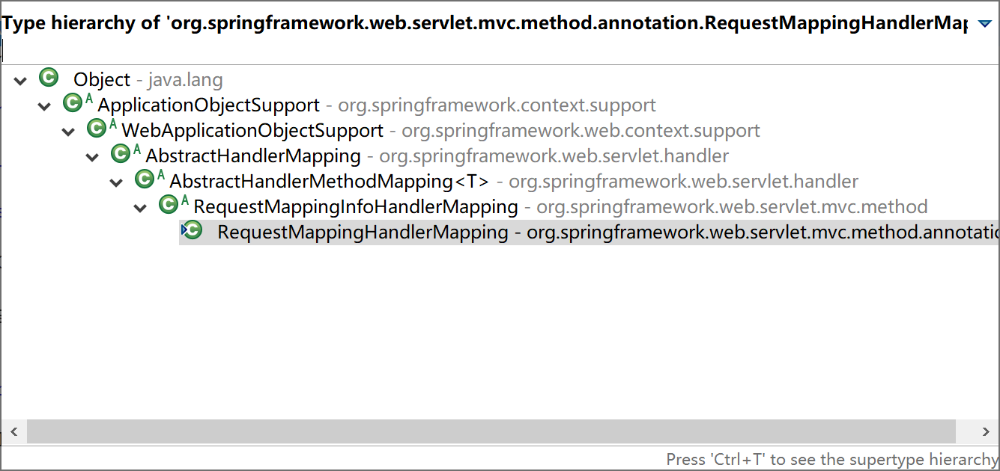
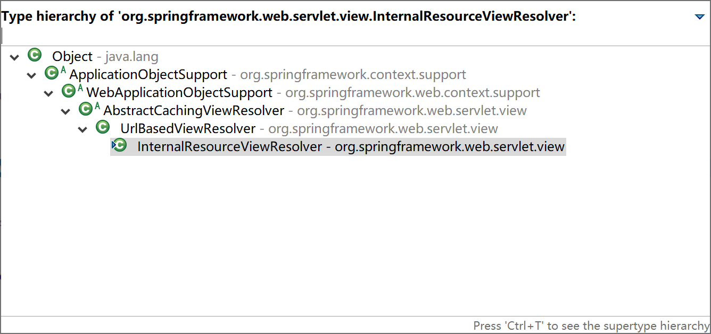
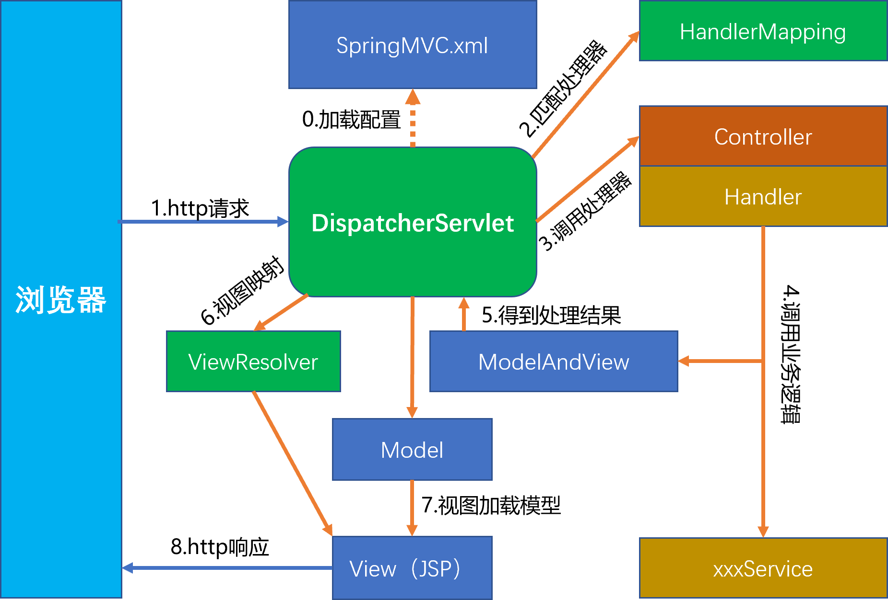
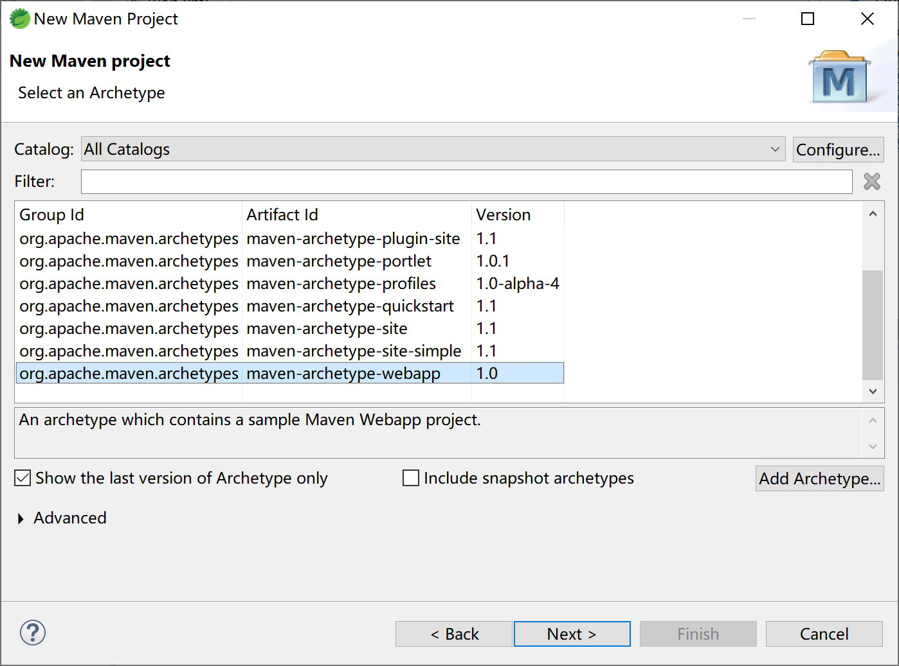
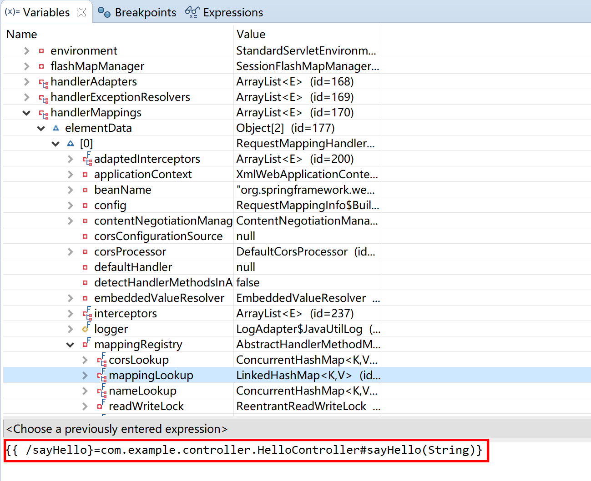
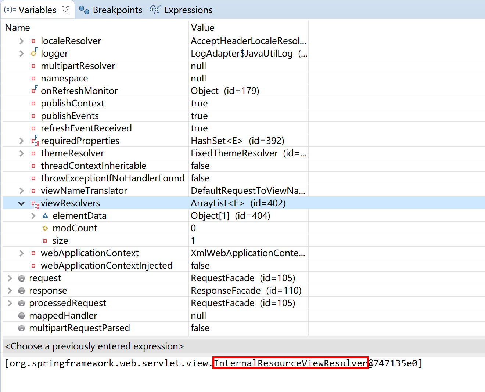
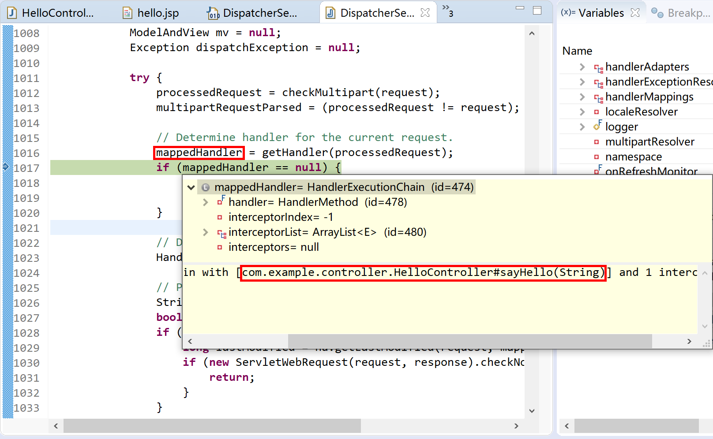

4.1 Spring MVC介绍
以前，我们大量的使用JSP+Servlet技术开发web应用。通过使用jstl技术（ Java server pages standarded tag library，即JSP标准标签库）封装一些常用组件，简化前端jsp页面的开发。
那个时候时间过得很慢，
慢到只能用一种技术规范，
开发web应用一辈子。
现在，我们更多的是使用前后端分离的MVVM技术来构建web应用。例如前端使用vue，后端使用rest方式（Representational State Transfer）开发业务功能接口，供前端通过ajax方式调用。
MVVM：Model-View-ViewModel的简写，它本质上就是MVC 的改进版。
无论是在以前还是现在，使用Spring开发web应用，首选的都是Spring MVC开发框架。
Spring MVC并不知道前端使用的视图技术，所以不会强迫您只使用 JSP 技术。实际上在Spring Boot 2.0框架中，Spring MVC推荐使用Thymeleaf模板技术。
Spring MVC分离了控制器、模型对象、分派器以及处理程序对象的角色，这种分离让它们更容易进行定制。
Spring 的 Web MVC 框架是围绕 DispatcherServlet 前端分发器设计的，它把请求分派给处理程序，同时带有可配置的处理程序映射、视图解析、本地语言（国际化，多语言支持）、主题解析以及上载文件等支持。默认的处理程序是非常简单的 Controller 接口，只有一个方法 ModelAndView handleRequest(request, response)。Spring 提供了一个控制器层次结构，可以派生子类。如果应用程序需要处理用户输入表单，那么可以继承 AbstractFormController。如果需要把多页输入处理到一个表单，那么可以继承 AbstractWizardFormController。
4.1.1 常用注解
Spring MVC在发展过程中也经历了一段“黑暗”时间：非常繁杂的xml配置，简直就是“xml hell”（xml配置地狱，指繁杂到失控的xml配置信息）。后来，使用上注解以后，才简洁易用起来。
所以，要想了解会用Spring MVC就必须掌握其最常用的注解。
4.1.1.1 @Controller
在SpringMVC 中，控制器Controller 负责处理由前端分发器DispatcherServlet 分发的请求，它把用户请求的数据经过业务处理层处理之后封装成一个Model ，然后再把该Model 返回给对应的View 进行展示。
在Spring MVC中定义一个Controller不需要继承某个父类，也无需实现某个接口。你只需要使用@Controller 标记一个类是Controller即可。
前端分发器DispatcherServlet将会扫描使用了该注解的类的方法，并检测该方法是否使用了@RequestMapping 注解。@Controller 只是定义了一个控制器类，而使用@RequestMapping 注解的方法才是真正处理请求的处理器。单单使用@Controller 标记在一个类上还不能真正意义上的说它就是Spring MVC 的一个控制器类，因为这个时候Spring 还不认识它。那么要如何做Spring 才能认识它呢？这个时候就需要我们把这个控制器类交给Spring 来管理。
各位，是否还记得Spring Boot启动类的注解@SpringBootApplication，这个注解是个复合注解，其中包含@ComponentScan会扫描到启动类包及其子包下的Controller控制器类，并将其加载到Spring容器中。
@ComponentScan(excludeFilters = { @Filter(type = FilterType.CUSTOM, classes = TypeExcludeFilter.class),
@Filter(type = FilterType.CUSTOM, classes = AutoConfigurationExcludeFilter.class) })
public @interface SpringBootApplication {
...
}
4.1.1.2 @RequestMapping
RequestMapping是一个用来处理请求地址映射的注解，可用于类或方法上。用于类上，表示类中的所有响应请求的方法都是以该地址作为父路径。
RequestMapping注解有六个属性，下面我们把她分成三类进行说明（下面有相应示例）。
value， method：
value： 指定请求的实际地址，指定的地址可以是URI Template 模式（后面将会说明）；
method： 指定请求的method类型， GET、POST、PUT、DELETE等；
consumes，produces：
consumes：指定处理请求的提交内容类型（Content-Type），例如application/json, text/html;
produces: 指定返回的内容类型，仅当request请求头中的(Accept)类型中包含该指定类型才返回；
params，headers：
params： 指定request中必须包含某些参数值是，才让该方法处理。
headers： 指定request中必须包含某些指定的header值，才能让该方法处理请求。
4.1.1.2.1 @PathVariables
用于将请求URL中的模板变量映射到功能处理方法的参数上，即取出uri模板中的变量作为参数。
@Controller
public class TestController {
@RequestMapping(value="/product/{productId}",method = RequestMethod.GET)
public String getProduct(@PathVariable("productId") String productId){
System.out.println("Product Id : " + productId);
return "hello";
}
@RequestMapping(value="/javabeat/{regexp1:[a-z-]+}", method = RequestMethod.GET)
public String getRegExp(@PathVariable("regexp1") String regexp1){
System.out.println("URI Part 1 : " + regexp1);
return "hello";
}
}
4.1.1.2.2 @RequstParams
用于在Spring MVC后台控制层获取参数，类似一种是request.getParameter("name")，它有三个常用参数：defaultValue = "0", required = false, value = "isApp"；defaultValue 表示设置默认值，required通过boolean值设置是否是必须要传入的参数，value 值表示接受的传入的参数类型。
多数情况下@RequestParam可以省略。
@RequestMapping("genUsers")
public String genUsers(@RequestParam int count) {
//public String genUsers(int count) {
for (int i=2; i<count+2; i++) {
String str = UUID.randomUUID().toString().substring(16);
User user = new User();
user.setId(i);
user.setUserName(str);
user.setRealName(str);
user.setPassWord(str);
userService.saveUser(user);
}
return "生成了" + count + "个用户。";
}
4.1.1.3 @ResponseBody
该注解用于将Controller的方法返回的对象，通过适当的HttpMessageConverter转换为指定格式后，写入到Response对象的body数据区。
返回的数据不是html页面，而是其他某种格式的数据时（如json、xml等）使用。
4.1.1.4 @ModelAndView
用来存储处理完后的结果数据，以及显示该数据的视图。从名字上看ModelAndView中的Model代表模型，View代表视图，这个名字就很好地解释了该类的作用。业务处理器调用模型层处理完用户请求后，把结果数据存储在该类的model属性中，把要返回的视图信息存储在该类的view属性中，然后让该ModelAndView返回该Spring MVC框架。框架通过调用配置文件中定义的视图解析器，对该对象进行解析，最后把结果数据显示在指定的页面上。
public ModelAndView handleRequestInternal(HttpServletRequest request,
HttpServletResponse response)throws Exception{
...
Map<String,Object> model = new HashMap<String,Object>();
if(courtName != null){
model.put("courtName",courtName);
model.put("reservations",reservationService.query(courtName));
}
return new ModelAndView("reservationQuery",model);
}
4.1.1.5 @RestController
@RestController是一个复合注解，其作用等同于@Controller + @ResponseBody。
@Target(ElementType.TYPE)
@Retention(RetentionPolicy.RUNTIME)
@Documented
@Controller
@ResponseBody
public @interface RestController {
/**
* The value may indicate a suggestion for a logical component name,
* to be turned into a Spring bean in case of an autodetected component.
* @return the suggested component name, if any (or empty String otherwise)
* @since 4.0.1
*/
@AliasFor(annotation = Controller.class)
String value() default "";
}
这个注解，大量地用在前后端分离的应用中。
4.1.2 Spring MVC剖析
要想彻底掌握Spring MVC，就必须深入其设计、运行机制，才能做到“知其然，也知其所以然”。
当然，彻底掌握任何一个框架，都是通过阅读官方文档（绝大多数时候是英文的）和源码来完成的。
最早，Spring MVC大部分是和JSP一起使用的，这里我们也以JSP为例，以便于讲解其运行机理。
4.1.2.1 加载过程
Spring MVC应用在启动过程中会创建两个Spring容器：基础容器（含@Repository，@Service，@Component等组件）和控制器容器（含@Controller）。
控制器容器容器“继承”自基础容器，所以在我们写的Controller里面可以注入@Service和@Component组件（当然，也可以注入@Repository，只是基于事务管理绝对不推荐这样做），而@Service组件中不能注入@Controller组件。
从依赖倒置原则来讲，@Service组件绝不应该依赖@Controller组件。
项目中，我们写在Controller中的标注了@RequestMapping的方法（如下面代码片段的getUser方法），在启动时会被扫描后装入DispatcherServlet的handlerMappings属性中。
@RestController
@RequestMapping("/user")
public class UserController {
@Autowired
private UserService userService;
@RequestMapping("get/{id}")
public String getUser(@PathVariable int id){
return userService.selectUser(id).toString();
}
...
DispatcherServlet的handlerMappings属性中存放了Spring MVC Web应用的所有路径映射处理器。
@SuppressWarnings("serial")
public class DispatcherServlet extends FrameworkServlet {
...
/** List of HandlerMappings used by this servlet. */
@Nullable
private List<HandlerMapping> handlerMappings;
...
HandlerMapping接口的最常用实现就是RequestMappingHandlerMapping类，具体继承层级如下图：

当然，启动过程还会在DispatcherServlet对象中加载ViewResolver、MultipartResolver等对象，这里我们不过多介绍。感兴趣的同学可以通过断点Debug的方式详细观察DispatcherServlet的加载过程。
4.1.2.2 前端分发器
DispatcherServlet就是Spring MVC的前端分发器。
在运行时，从前端（一般都是浏览器发起一个http请求）过来的请求，被DispatcherServlet截获后，就调用doDispatch方法，寻求合适的处理器（参考下面代码片段中的第17行，mappedHandler = getHandler(processedRequest)）处理这个请求。
protected void doDispatch(HttpServletRequest request, HttpServletResponse response) throws Exception {
HttpServletRequest processedRequest = request;
HandlerExecutionChain mappedHandler = null;
boolean multipartRequestParsed = false;
WebAsyncManager asyncManager = WebAsyncUtils.getAsyncManager(request);
try {
ModelAndView mv = null;
Exception dispatchException = null;
try {
processedRequest = checkMultipart(request);
multipartRequestParsed = (processedRequest != request);
// Determine handler for the current request.
mappedHandler = getHandler(processedRequest);
if (mappedHandler == null) {
noHandlerFound(processedRequest, response);
return;
}
// Determine handler adapter for the current request.
HandlerAdapter ha = getHandlerAdapter(mappedHandler.getHandler());
// Process last-modified header, if supported by the handler.
String method = request.getMethod();
boolean isGet = "GET".equals(method);
if (isGet || "HEAD".equals(method)) {
long lastModified = ha.getLastModified(request, mappedHandler.getHandler());
if (new ServletWebRequest(request, response).checkNotModified(lastModified) && isGet) {
return;
}
}
if (!mappedHandler.applyPreHandle(processedRequest, response)) {
return;
}
// Actually invoke the handler.
mv = ha.handle(processedRequest, response, mappedHandler.getHandler());
if (asyncManager.isConcurrentHandlingStarted()) {
return;
}
applyDefaultViewName(processedRequest, mv);
mappedHandler.applyPostHandle(processedRequest, response, mv);
}
catch (Exception ex) {
dispatchException = ex;
}
catch (Throwable err) {
// As of 4.3, we're processing Errors thrown from handler methods as well,
// making them available for @ExceptionHandler methods and other scenarios.
dispatchException = new NestedServletException("Handler dispatch failed", err);
}
processDispatchResult(processedRequest, response, mappedHandler, mv, dispatchException);
}
catch (Exception ex) {
triggerAfterCompletion(processedRequest, response, mappedHandler, ex);
}
catch (Throwable err) {
triggerAfterCompletion(processedRequest, response, mappedHandler,
new NestedServletException("Handler processing failed", err));
}
finally {
if (asyncManager.isConcurrentHandlingStarted()) {
// Instead of postHandle and afterCompletion
if (mappedHandler != null) {
mappedHandler.applyAfterConcurrentHandlingStarted(processedRequest, response);
}
}
else {
// Clean up any resources used by a multipart request.
if (multipartRequestParsed) {
cleanupMultipart(processedRequest);
}
}
}
}
更详细的处理过程，请在运行时跟踪doDispatch了解更多。
4.1.2.3 控制器方法
在Controller中的标注了@RequestMapping的方法就是控制器方法，也叫处理器（handler）。
如前所述，web应用启动时，会将所有的处理器扫描到DispatcherServlet的handlerMappings属性中，供其doDispatch方法匹配合适的处理器，然后执行处理器中的逻辑。
控制器方法（处理器）一般完成前端数据的准备封装工作，然后调用服务层方法完成特定的业务逻辑功能处理。
@RequestMapping("get/{id}")
public String getUser(@PathVariable int id){
return userService.selectUser(id).toString();
}
如上，getUser方法就是控制器方法，在运行时就是一个处理器。
4.1.2.4 视图解析器
视图解析器决定了控制器方法返回的视图如何处理，比如InternalResourceViewResolver就是用JSP视图技术的解析器。

其构造器方法，会为其设置视图的前缀和后缀。
public InternalResourceViewResolver(String prefix, String suffix) {
this();
setPrefix(prefix);
setSuffix(suffix);
}
在下面的配置片段场景中，如果控制器方法中返回“hello”字符串，则Spring MVC框架会找到/WEB-INF/views/hello.jsp这个页面，来渲染给浏览器。
<!-- 这个类用于Spring MVC视图解析 -->
<beans:bean id="viewResolver"
class="org.springframework.web.servlet.view.InternalResourceViewResolver">
<beans:property name="prefix" value="/WEB-INF/views/" />
<beans:property name="suffix" value=".jsp" />
</beans:bean>
4.1.2.5 动态资源
传统上，动态资源就是JSP文件。
一般而言，我们都会为DispatcherServlet配置拦截所有的前端请求，在控制器（Controller）方法返回的视图（View）中加载业务数据（Model）。
<servlet>
<servlet-name>dispatcherServlet</servlet-name>
<servlet-class>org.springframework.web.servlet.DispatcherServlet</servlet-class>
<init-param>
<param-name>contextConfigLocation</param-name>
<param-value>classpath:META-INF/spring/springmvc-context.xml</param-value>
</init-param>
<load-on-startup>1</load-on-startup>
</servlet>
<servlet-mapping>
<servlet-name>dispatcherServlet</servlet-name>
<url-pattern>/</url-pattern>
</servlet-mapping>
4.1.2.6 静态资源
服务器上的视图（页面）资源，不都是JSP文件，还包括JavaScript文件、图片、CSS样式文件等，这些就是静态资源。静态资源都是在客户浏览器端加载的，显然并不需要DispatcherServlet拦截处理，更不能解析到/WEB-INF/views/arrow.png这样的错误位置上。
Spring MVC为静态资源提供了过滤机制。所有过滤掉的静态资源，DispatcherServlet直接放行。
<mvc:resources mapping="/images/**" location="/images/" />
4.1.2.7 一个完整的请求过程
前面，我们已经大致了解了Spring的运行机制，下面以浏览器发起http请求到接收到返回结果的全过程来加深理解Spring MVC的处理流程。

- Spring MVC的Spring容器及前端分发器加载SpringMVC.xml配置文件，完成Spring MVC的初始化；
- 浏览器发起一个http请求（Request），被DispatcherServlet拦截到；
- DispatcherServlet查询handlerMappings匹配一个handler；
- 调用handler；
- handler调用服务层对应的方法，完成业务逻辑处理；
- 业务逻辑返回的结果被handler包装到一个ModelAndView中；
- DispatcherServlet通过ViewResolver获取解析视图；
- 将Model上的数据加载到View上；
- View（JSP页面）向浏览器返回http响应（Response）。
4.1.3 传统Spring MVC示例
为了更好的观察Spring MVC的配置、加载、运行机制，我们以一个用JSP页面的Spring MVC项目为例，来介绍我们前面介绍到的一些知识点。
本示例，使用的8.5版本的Tomcat。
创建maven项目，选择maven-archetype-webapp骨架。

在pom文件中添加Spring MVC的依赖。
<dependency>
<groupId>org.springframework</groupId>
<artifactId>spring-webmvc</artifactId>
<version>5.2.1.RELEASE</version>
</dependency>
为项目配置web.xml：
<?xml version="1.0" encoding="UTF-8"?>
<web-app xmlns:xsi="http://www.w3.org/2001/XMLSchema-instance"
xmlns="http://java.sun.com/xml/ns/javaee"
xsi:schemaLocation="http://java.sun.com/xml/ns/javaee http://java.sun.com/xml/ns/javaee/web-app_3_0.xsd"
id="WebApp_ID" version="3.0">
<display-name>spring-mvc-jsp</display-name>
<servlet>
<servlet-name>SpringMVC</servlet-name>
<servlet-class>org.springframework.web.servlet.DispatcherServlet</servlet-class>
<init-param>
<param-name>contextConfigLocation</param-name>
<param-value>classpath:spring-context.xml</param-value>
</init-param>
<load-on-startup>1</load-on-startup>
</servlet>
<servlet-mapping>
<servlet-name>SpringMVC</servlet-name>
<url-pattern>/</url-pattern>
</servlet-mapping>
<welcome-file-list>
<welcome-file>index.jsp</welcome-file>
</welcome-file-list>
</web-app>
为Spring MVC前端分发器DispatcherServlet指定的配置文件为classpath:spring-context.xml。
<beans xmlns="http://www.springframework.org/schema/beans"
xmlns:xsi="http://www.w3.org/2001/XMLSchema-instance"
xmlns:mvc="http://www.springframework.org/schema/mvc"
xmlns:context="http://www.springframework.org/schema/context"
xsi:schemaLocation="http://www.springframework.org/schema/beans
http://www.springframework.org/schema/beans/spring-beans.xsd
http://www.springframework.org/schema/mvc
http://www.springframework.org/schema/mvc/spring-mvc.xsd
http://www.springframework.org/schema/context
http://www.springframework.org/schema/context/spring-context.xsd">
<context:component-scan base-package="com.example"/>
<mvc:annotation-driven/>
<mvc:resources location="/images/" mapping="/images/**"/>
<bean class="org.springframework.web.servlet.view.InternalResourceViewResolver">
<property name="prefix" value="/WEB-INF/views"></property>
<property name="suffix" value=".jsp"></property>
</bean>
</beans>
这个文件中配置了组件扫描路径（12行）、注解驱动（13行）和静态资源过滤（14行）。
为JSP视图解析器InternalResourceViewResolver配置了前缀、后缀属性。
创建一个控制器，提供一个控制器方法（请求处理器），服务项目上下文的/sayHello请求路径，返回一个ModelAndView：
- Model中存储了模拟服务层返回的
sayHello + who + "."内容，其键值为sayHello； - View指定为
/hello，根据视图解析器配置换算成真实文件为/WEB-INF/views/hello.jsp。
package com.example.controller;
import org.springframework.stereotype.Controller;
import org.springframework.web.bind.annotation.RequestMapping;
import org.springframework.web.servlet.ModelAndView;
@Controller
public class HelloController {
@RequestMapping("/sayHello")
public ModelAndView sayHello(String who) {
ModelAndView mv = new ModelAndView();
//模拟调用Service方法，返回问候语sayHello
String sayHello = "Greeting! Hello ";
mv.addObject("sayHello", sayHello + who + ".");
mv.setViewName("/hello");
return mv;
}
}
编写hello.jsp文件，接收Model中携带的sayHello业务对象值（Model）。
并在其中插入一张图片，演示静态资源的使用。
<%@ page language="java" contentType="text/html; charset=UTF-8" pageEncoding="UTF-8"%>
<!DOCTYPE html>
<html>
<head>
<meta charset="UTF-8">
<title>Say Hello to WHO.</title>
</head>
<body>
<img src="<%=request.getContextPath()%>/images/RoyElephant.png" width="128" height="128" />
${sayHello}
</body>
</html>
运行，测试，正确返回期望的结果。
更进一步：可以在Debug模式下，设置断点，观察其内部数据。如DispatcherServlet的handlerMappings这个List里面注册了我们在控制器里面写的“请求处理器”sayHello(String)这个方法。

以及我们在前面配置的视图处理器InternalResourceViewResolver。

可以清晰地看到当前请求所对应的处理器。

更多源码跟踪解读，请读者自行完成。
本小节示例项目代码：
https://github.com/gyzhang/SpringBootCourseCode/tree/master/spring-mvc-jsp